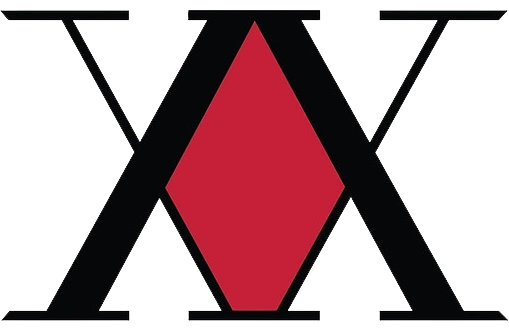

Associação de caçadores

A Associação de Caçadores é uma organização não governamental responsável pelo teste e licenciamento dos "Caçadores" , indivíduos que provaram ser membros de elite da humanidade, através do rigoroso exame. Com a aprovação no Exame de Caçador, o candidato é recompensado com uma licença para ir quase a qualquer lugar do mundo e fazer quase qualquer coisa, declarando-se assim Pro Hunters. Normalmente, os Caçadores se dedicam a caçar itens preciosos, lugares místicos e as maravilhas invisíveis do mundo.